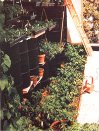
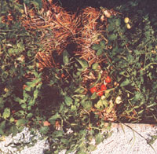

Maybe you can't spin those stalks into gold, but it takes just a bit of fiddling to play . . .
I think I've discovered the perfect compromise method for growing tomatoes (and other garden produce) indoors . . . a Golden Mean between the high-tech effectiveness of hydroponic cultivation and the simplicity-and lower cost-of raising plants in soil. I'm talking about straw-bale culture, a technique I heard of only after hauling some 300 cubic feet of pumice, gravel, and dirt to fill the planting beds of my new solar-heated greenhouse.
As I paused in the middle of that task to contemplate (and curse) the necessity of trucking still more earth to my conservatory, some sympathetic friends came to my rescue with tales of "soilless" hothouse gardening. Needless to say, the idea caught my fancy immediately. After all, who wouldn't exchange the transfer of tons of terra firma for the lifting of a little straw?
Bale culture, as noted above, is similar to hydroponics in many respects . . . but it does not require the special equipment or the twice-daily soakings necessary in many water-growing methods. In fact, plants raised in straw seem to need even less water than do those rooted in soil. And unlike the almost inert growing medium of the hydroponic system, the constantly composting environment of straw-nurtured plants provides some "bonus" nutrients for the vegetables . . . as well as a source of gentle heat for their roots and for the greenhouse.
Nor do the advantages of growing vegetables in straw end there. Tomatoes, in particular, seem to fairly leap at the chance to form huge nurturing root systems amidst the stalks .. . and such formations are (within limits) very productive of healthy plant tops. The composting straw also produces some CO 2 gas, the presence of which in more than usual amounts tends to improve the growth rate and general health of all the vegetation in the greenhouse.
GETTING OFF THE GROUND
Because a typical straw bale is about 24" wide, I set aside room-in my conservatory-to accommodate a 2' X 20' bed of the material. After putting down a layer of plastic sheeting (to help the straw retain water), I simply set the bales end to end. (You could use loose straw held in place by barrier walls . . but the unpacked stalks sink rather drastically in the course of time, displacing the plants. It's also somewhat difficult to stake tomatoes that are growing in unbound straw.)
After the bales are in place, you'll have to undertake a three-week period of preparation before setting out your plants. First, each bale needs to be soaked with a gallon of water daily for two weeks. (It's also a good idea to keep the straw covered with plastic sheeting between waterings.) Once the bundles have been thoroughly drenched for 14 consecutive days and organic decomposi tion is underway, you can apply the fertilizer that will nurture your vegetables.
Commercial tomato food (for example) contains everything necessary for the successful growth of a crop of love apples . . . providing nitrogen, phosphate, and potassium represented in a ratio of about 5/10/10. For the initial fertilization of your straw bed, you'd need about 2-1/2 pounds of such augmentation per bale.
In contrast, many hydroponic fertilizers have a nitrogen/phosphate/potassium ratio of 8/8/22 (they also supply calcium, manganese, magnesium, cobalt, iron, and molybdenum). Though I've had no personal experience in using those products, I'd imagine that-again-feedings of 2-1/2 pounds per bale would be suitable . . . though you may want to cut down on the amount of potassium later- in the growth cycle. [EDITOR'S NOTE: It's a good idea to check with your local fertilizer dealer-or county agricultural agent-before using plant foods in growing mediums other than those intended by the manufacturer.]
If you prefer to mix your own growth inducer, you'll find blood meal to be an excellent source of nitrogen. It also has some phosphate content, and more of that substance can be obtained from rock phosphate. Wood ash will provide potassium . . . iron is present in the blood meal . . . and magnesium can be supplied by seaweed or Epsom salts (at a dosage of one tablespoon per plant). Finally, well-composted manure is generally an adequate source of many of the minerals necessary to healthy plant growth.
Any good book on gardening will suggest ways to supply your plants with the essential nutrients. I've found Frank Allerton's Tomatoes for Everyone (available for $7.50 postpaid from the publisher: Faber & Faber, Dept. TMEN, 39 Thompson Street, Winchester, Massachusetts 01890) to be an excellent guide to all kinds of productive tomato-growing methods, including strawbale culture.
Whatever fertilizer you use, first spread it-dry-on top of the straw, then water the bed daily for about a week (use a gallon per bale). If the growing medium is too densely packed or the plant food seems insoluble, you can work it into the tightly bound bundle with a trowel.
The introduction of the fertilizer will rapidly increase the rate of bacterial action in the decomposing straw, raising the bed's internal heat. An effort should be made to retain this warmth (by continuing to cover the planting medium with plastic) to aid in the generation of the nutrients needed for plant growth.
During the period of intense composting, any seeds in the straw are likely to sprout. It's possible that the heat of decomposition will kill the shoots . . . if not, you'll want to weed them out prior to transplanting your tomato seedlings.
Within a week following fertilization, the temperature in the interior of the bales will have begun to subside. Once it drops below 100°F, you'll be able-finally-to plant your crop. (If you don't have an appropriate thermometer for monitoring the internal temperature of the straw, just push a stick into the bedding and leave it there for an hour. If the wood is only slightly warm to the touch when you withdraw it, you're ready to bring on the plants!)
SWING YOUR PLANTER
While I'd imagine you could grow just about any variety of tomato in a composted straw bed, I've had very good luck with Tuckcross 520 . . . which was developed specifically for greenhouse cultivation. I've also achieved excellent yields from such standbys as Marglobe, Rutgers, and Red Cherry. In short, straw-bale culture seems to reward the gardener on a fairly consistent basis, regardless of the kind of plant raised . . . as long as each seedling's feeding requirements are recognized.
You'll get the best results from your straw bed by transplanting tomatoes that are six to eight weeks old. Allow five plants for every two bales. To hold each young'un in place and give it a start, set a 4"- to 6"-high, 6"-diameter ring of cardboard or metal (a one-pound coffee tin with both ends removed works well) directly on top of the bedding . . . fill the cylinder with compost or soil . . . and plant one of your infant tomatoes in it.
This is also the best time to stake the young plants. The job will be easy if you're using bales . . . but if you've opted for loose straw, it'll be necessary to devise a supporting frame.
As the seedlings begin to sink their roots into the fertilizer-enriched straw, they'll rapidly use up the nutrients. Therefore, approximately two weeks after planting-and every other week thereafter-you should replenish the beds with about one-quarter of the amount of nitrogen fertilizer you used in the first feeding. On alternate weeks, refortify the potassium content of the straw with onequarter of the dosage initially spread on the bales . . . and always keep a sharp eye out for signs of nutrient deficiencies.
I've occasionally varied my feeding routine by serving each tomato a gallon of manure tea. And I've also tried a solution of water and fish emulsion ... a mixture which had the unexpected and pleasant side effect of filling my inland greenhouse with the faint but unmistakable aroma of the sea.
THE JOY OF STRAW-BURYING
Aside from their need for regular nutritional supplements, tomatoes planted in straw are cared for pretty much as more traditionally cultivated crops would be. Soon after my initial planting, I was able to harvest succulent red fruit, and I did so for months before the plants began to give out. Of course, there are a few things to be considered prior to opting for the bundled stalk method . . . including the cost of the straw itself, fertilizer prices, and the possibility of plant burnout if you overfeed your tomatoes (or of the production of giant stalks with more leaves than fruit if you overdo the nitrogen).
All things considered, though, I'm convinced that straw-bale culture's advantages far outweigh any drawbacks. In fact, I plan to use the method with other crops, and try it for outdoor planting as well. Meanwhile, I believe I've discovered an important secret: When it comes to growing tomatoes in a greenhouse, straw-the Golden Mean-is the happy medium!
|
 |
 |
|